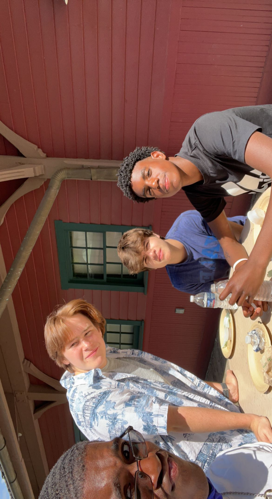

My name is Jamal Rudoplph and I am a student athlete, but in the future I want to be an olympian. I enjoy a lot things. I enjoy playing games, playing sports, and hanging out with friends. My main hobby right now is running track. I just started running track this past school year and it’s honestly the best thing that happened to me these past couple years. One thing I am currently working on is coding skills.

My favorite game to play is Super Smash Bros. I have been playing it since I was a kid.
This is a picture of me and my friends at school.

While in my running career I want to go the olympics.